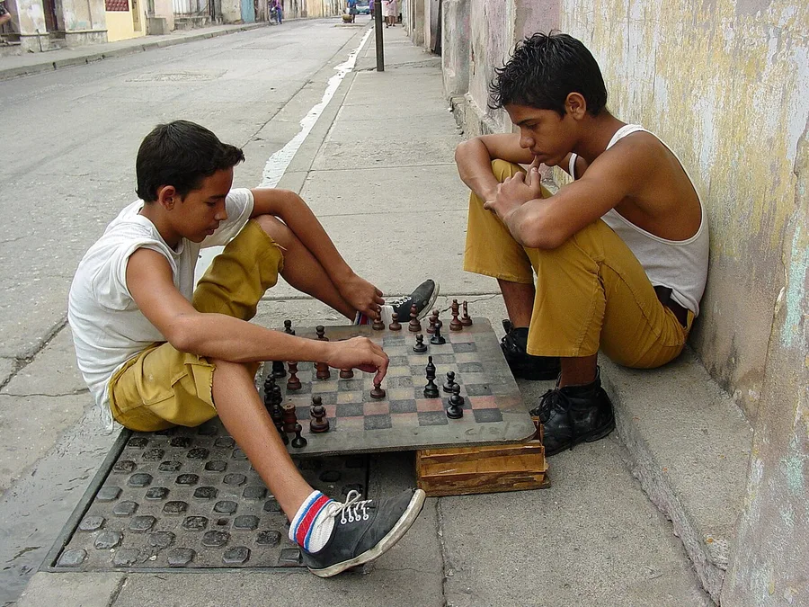

Chess, First Session
Sixteen pieces, six kinds of moves, one quiet hour: the first game, taught so it never feels like a test.
Before you begin
- Ages
- 7–14
- Group
- 2–30 kids
- Time
- 30–60 min
- Where
- Indoors
- Prep
- Some prep needed

Setup
One set per pair, a quiet table, and no clock anywhere in sight; first sessions run on curiosity, not time. Set up the demonstration position with the group watching: a light square at every player's right hand, and each queen on her own colour. Pair players of similar experience where you can, and let true beginners play two-to-a-side at first.
Materials
- chess sets (one per pair)
- a demonstration board (optional)
Steps
- Teach the board and the army first. Name every piece, set the position together twice, then have every player set it once alone. Setting up correctly is the first skill of chess.
- Teach the moves one piece at a time: pawn first (forward to march, sideways to capture, dreaming of the far side), then rook, bishop, queen, king, and the knight last, because the knight's hop is the move every beginner loves.
- Play pawn games before whole games: eight pawns each, first to march one home or capture all of the other's. Small games finish, and finishing teaches more than any lecture.
- Then play a first full game with one house rule: any player may take back one move per game, no questions asked. Say check kindly: 'your king is in trouble' before the word check.
- End the session mid-interest, never mid-exhaustion, and record nothing but who wants a rematch.
Variations
Easier: Mini-chess with half the army (king, queen, two rooks, pawns) and take-backs allowed freely for the first month.
Harder: Bring in a friendly ten-minute clock, and teach one opening idea as the session's single lesson: fight for the centre.
Safety
The safety here is social, and it is real: chess clubs die on mockery. A lost game is never laughed at, a win is celebrated quietly, and any player may resign with dignity at any time. Pieces stay on the table or in hands, never thrown.
Source: Wikipedia, en.wikipedia.org
Inclusion notes
Large-print and tactile sets serve players with low vision, and players may choose the piece colours they read best. A player who cannot yet sit a full game plays the pawn-game circuit at full standing.
Tried this? Rate it
Your ratings live in this browser only. Nobody else can see them. There are no community ratings here; every star on this card is yours.
Rate this activity, add a note, or write a reflection
Quick reflection
Optional, saved with your rating, and exported with "Copy my week".
Full activity card,